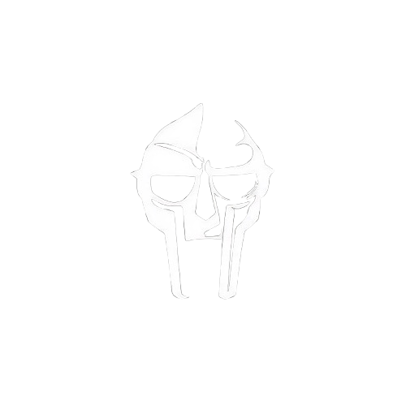
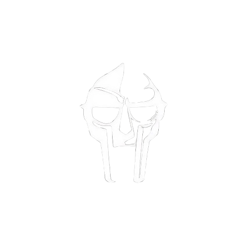
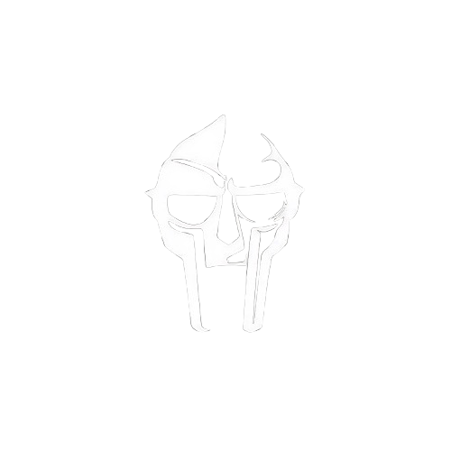
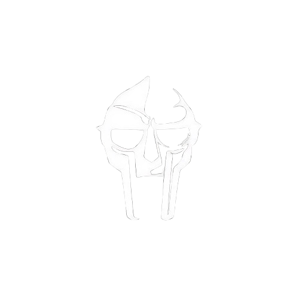

"MM..FOOD" es un álbum de 2004 del rapero MF DOOM. El título es un anagrama de "MF DOOM" y el álbum gira en torno a la temática de la comida, con letras ingeniosas y complejas que mezclan referencias culinarias con críticas sociales y temas personales. Es una muestra del estilo característico de DOOM, con un enfoque único en la producción y el juego de palabras.